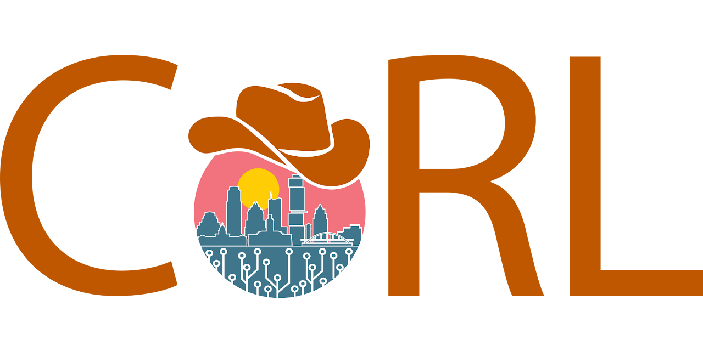
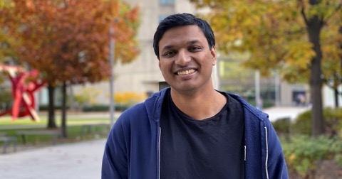
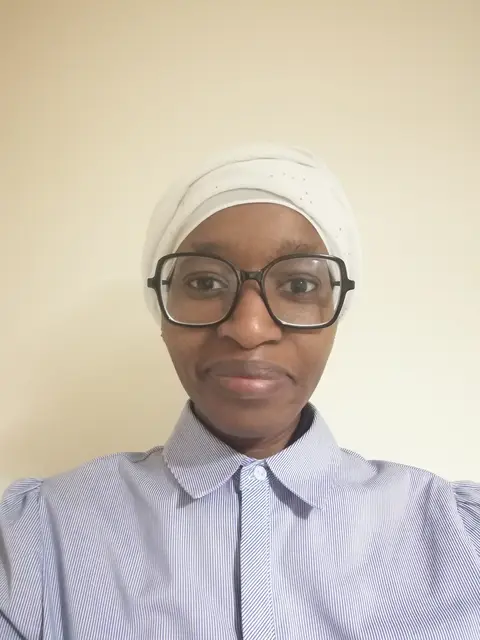
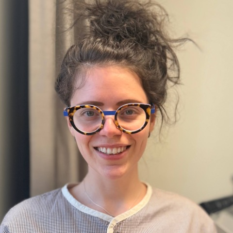
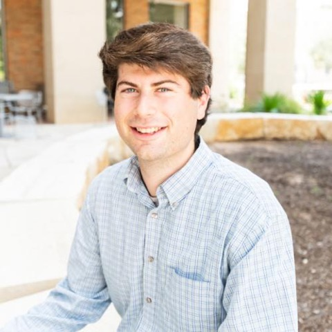

2026Workshop
About
Inspired by the recipe that worked for LLMs, modern robot learning chases scale: large datasets, large models, and abundant real-world interaction. But in embodied settings, real-world experience is arguably orders of magnitude more expensive than the internet-scale corpora behind LLMs and VLMs. In many of the domains where robotics has the most to offer — healthcare, space exploration, disaster response, assistive robotics — the mantra “just collect more data” is infeasible.
This workshop asks: how can robots learn reliable real-world behavior on a tight budget of real-world experience? We organize the open problems into four cross-cutting themes — C.A.S.E.
- Cope. Learn behavior that stays safe across the irreducible gap between training data and deployment, with policies that gauge and act on their own uncertainty rather than fail silently.
- Acquire. Lower the price of experience through (semi-)autonomous data collection, self-supervised exploration, automated resets, and active learning that spends a limited interaction budget wisely.
- Structure. Inject prior knowledge — physics-informed models, symbolic components, tailored representations — so less must be learned from costly data.
- Exploit. Extract the most from every data point, fusing modalities such as force, tactile, proprioception, and vision into richer learning signals.
Invited Speakers & Panelists
- Anirudha MajumdarPrinceton University
- Georgia ChalvatzakiTU Darmstadt
- Leslie Pack KaelblingMIT

Abhishek GuptaUniversity of Washington- Edward JohnsImperial College London
Schedule
| 08:40 | Welcome & audience engagement |
| 09:00 | Invited talk — Anirudha Majumdar (Princeton) |
| 09:25 | Invited talk — Georgia Chalvatzaki (TU Darmstadt) |
| 09:50 | Lightning talks — contributed papers |
| 10:20 | Coffee break & poster session |
| 11:00 | Invited talk — Abhishek Gupta (UW) |
| 11:25 | Invited talk — Leslie Pack Kaelbling (MIT) |
| 11:50 | Interactive panel |
| 12:30 | Awards & closing remarks |
Half-day program; exact times TBD.
Call for Papers
We invite submissions of up to 4 pages, following the CoRL template and double-blind guidelines, reviewed on OpenReview. Accepted papers are featured as lightning talks and in the poster session, with a Best Research Award and a Most Popular Poster award. Topics of interest include, but are not limited to:
- Robot learning in domains where “just collect more data” is impractical.
- Efficient data acquisition: self-supervised exploration, autonomous data collection.
- Methods that increase learning signal per trial, e.g. via diverse sensor modalities.
- Structured approaches combining symbolic and data-driven components, such as offline learning with online planning and control.
- Uncertainty quantification for resilient behavior beyond the training distribution.
- Measures and benchmarks for comparable robot learning under data limitations.
Submission link and deadlines TBD.
Important Dates
| TBD | Paper submission deadline |
| TBD | Acceptance notification |
| TBD | Camera-ready deadline |
| TBD, 2026 | Workshop at CoRL 2026 |
Dates to be announced.
Organizers
- Lasse PetersUC Berkeley

Fanta CamaraUniversity of York- Jacob LevyUT Austin

Alberta LonghiniStanford University- Brett BarkleyUT Austin
- Hanna KrasowskiUC Berkeley
- John ViljoenUC Berkeley
- Negar MehrUC Berkeley

David Fridovich-KeilUT Austin